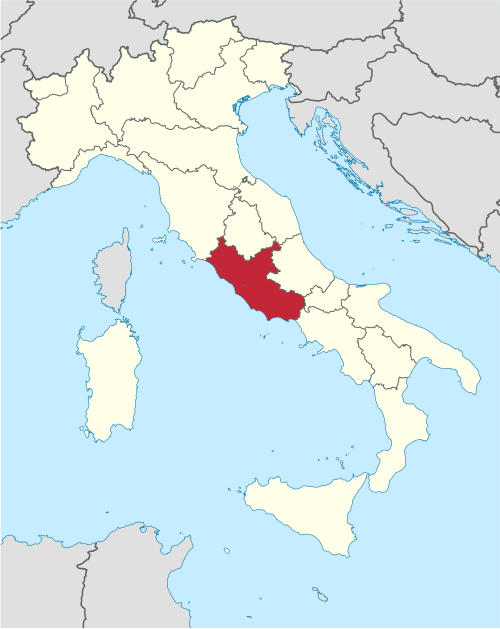
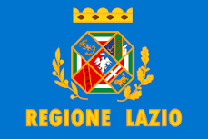
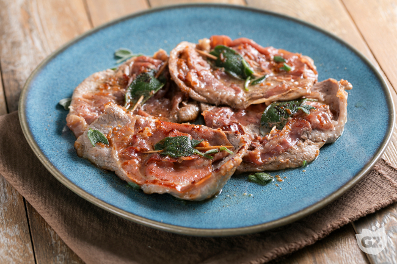
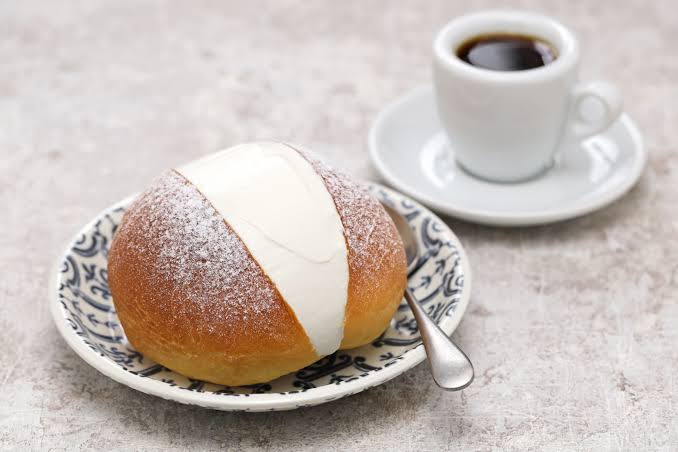
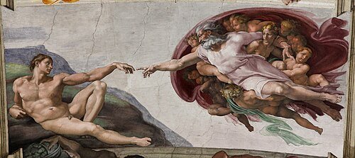

Carbonara, maritozzo, and coffee (specifically espresso)
⭐ Known For
Rome (and its iconic landmarks), the Vatican, and ancient Roman history
Geography

Location of Lazio within Italy.
Lazio, or Latium, is situated in the western-central area of the country. It is bordered
by the Italian regions of Tuscany, Umbria and Marche to the north; Abruzzo and Molise to the east; Campania
to the south; and the Tyrrhenian Sea to the west.
The region is divided in 4 provinces and 1 metropolitan city: Rome (metropolitan city),
Frosinone, Latina, Rieti, and Viterbo
Capital (and largest city): Rome (capital of both the region and country of Italy)
Climate
The region's climate shows considerable variability from area to area. In general, along the coast, there is
a mediterranean climate, the temperature values vary between 9–10 °C (48-50°F) in January and 24–25 °C
(75-77°F) in July. Towards the interior, the climate is more continental and, on the hills, winters are cold
and at night, temperatures can be quite frigid. With particular regard to the sunshine duration, it should
also be noted that, among the regional capital cities in Italy, Rome is the one with the highest number of
hours of sunshine and days with clear skies during the year.
Note: Europe is also the fastest-warming continent in the world with its temperatures
rising at roughly twice the global average, according to a recent report by the World Meteorological
Organization and EU climate monitor Copernicus. Scientists say human-caused climate change has also made
heatwaves more frequent and more intense across Europe in recent years. Rome is part of it, with heat waves
of 40+ becoming the norm.
Topography
The region has a landscape unsurpassed by many in Italy. To the east, Lazio is dominated by the Central
Apennine mountain ranges, rising to 2,216 metres at Mount Terminillo. To the west, the coast of Lazio is
mainly low-lying with long, sandy beaches interrupted by the headlands of Circeo and Gaeta. The Pontine
Islands, which are part of Lazio, lie to the south of the region. The lakes of Bolsena, Vico, Bracciano lie
northwest of Rome; the lakes Albano and Nemi to the southeast of Rome. All were formed from four groups of
ancient volcanoes.
Origins
Early history and prehistory: Since the Bronze Age, traces of settlement have been found
in the region known today as Lazio. Ancient Greeks knew the settlements of Lazio and probably traded with
them. The name Lazio (also called Latium) is probably derived from the Latin word "latus" (term for
"far"
and "flat land") or an earlier Indo-term. From the 8th Century B.C. on, the Etruscans from the neighbouring
region of Etruria (modern Tuscany) had a strong influence on Lazio, whose settlements and cities defended
themselves against the Etruscans for a long time before they were defeated by the newly established centre
of power in Rome.
The Rise of Rome: With the founding of Rome, a new political and military centre developed
in Lazio. The non-Etruscan cities under the leadership of Alba Longa, where the Latin language originated,
were subjected by Rome and the city rose steadily and rapidly to become a regional and, in the end, a world
power. Lazio became the predominant province and also included present-day Campania.
Fall of the Roman Empire: With the introduction of Christianity as the state religion and
the establishment of the first Pope, the Catholic Church finally assumed power in Rome. After the fall of
the Western Roman Empire, noble families and the Pope ruled the province of Lazio. With the rise of the
Vatican, Lazio eventually became a political union with the Papal States and the Vatican extended its
temporal power over the whole of central Italy.
Renaissance Era: Modern-day region of Lazio fell under the reign of the Papal States,
which under the warrior pope Julius II (1503–13), the Papal States reached their greatest extent, stretching
from Parma and Bologna in the north to the south and east, along the Adriatic coast and through Umbria to
the Campagna, south of Rome; much of the expansion was the result of campaigns led by the pope himself. By
the end of the 16th century, however, these territories constituted merely one of a number of petty Italian
states. The prestige of the Papal States was further diminished by the spread of the Reformation from the
mid-16th century and the growth of Spanish power on the Italian peninsula in the 17th century.
1790: The Papal States were profoundly affected by the French Revolution and the
subsequent wars of Napoleon Bonaparte. After an initial defeat by Napoleon, the Pope finally had to accept
the unification of Italy and Lazio was incorporated into the Kingdom of Italy in 1870…. But not without a
fight! In the course of the Risorgimento, the existence of the Papal States proved an obstacle to national
union both because they divided Italy in two and because foreign powers intervened to protect papal
independence. Annexation of the Papal States to the new Italian nation, however, was eventually achieved.
1859: After Austria’s defeat, several territories detached themselves from the Papal
States and joined the kingdom of Sardinia.
1861: All the former papal territories, with the exception of Rome and its surrounding
region, joined the new kingdom of Italy. Rome and its patrimony remained separate only because they were
protected by French troops, who eventually withdrew in 1870 during the Franco-Prussian War. Italian troops
entered Rome on September 20, 1870; after a plebiscite in October of that year, it became the capital of
Italy. The Papal States had finally come to an end. Pius IX refused to accept the new political situation or
to recognize the loss of papal temporal power, and he and his successors remained self-described “prisoners
in the Vatican.” The question of the pope’s relation to the Italian state was unsettled until the Lateran
Treaty of 1929 set up the independent ecclesiastical state of Vatican City
Population and Major Cities
Population
As of 2026, the population of Lazio is 5.7 million people.
In addition, the region covers an area of 17,239 km² and a population density of 331.2/km².
Major Cities (as of 2026)
1. Rome
Rome is the capital city of both Italy and the Lazio region. It is one of the oldest continuously
inhabited cities in the world, with a history that spans over 2,500 years. Known as the center of
the Roman Empire, Rome is home to iconic landmarks such as the Colosseum, the Roman Forum, and the
Pantheon, which reflect its ancient power and influence. Today, it is a modern capital that blends
history, politics, culture, and tourism, and it is also home to Vatican City, the center of the
Catholic Church.
Latina is a city in the Lazio region known for its modern origins and agricultural surroundings.
Founded in the 1930s during Italy’s land reclamation projects, it is one of the country’s youngest
cities with a planned layout. It is surrounded by fertile farmland, making agriculture a key part of
its economy, and is also close to the Tyrrhenian Sea, giving it access to coastal areas and beaches.
Population: 127,450 people
3. Guidonia Montecelio
Guidonia Montecelio is a city in the Lazio region located northeast of Rome. It is known for its
military aviation history and the presence of the Italian Air Force’s experimental flight center.
The area also has important industrial and quarrying activities, especially related to travertine
stone used in construction. Today, Guidonia Montecelio functions as a growing commuter city for
people working in Rome, while still maintaining its own local economy and identity.
Population: 89,420 people
4. Fiumicino
Fiumicino is a coastal city in the Lazio region best known for hosting Rome’s main international
airport, Leonardo da Vinci–Fiumicino Airport. It has strong connections to aviation, tourism, and
transportation, making it one of Italy’s most important travel hubs. The city is also known for its
fishing industry and seafood cuisine, with many restaurants specializing in fresh fish along the
coast. Its seaside location and proximity to Rome make it both a key gateway to Italy and a popular
coastal destination.
Population: 83,415 people
Landmarks
Note: I normally include two landmarks per region, but for Rome, I’ve made an exception
because of its historical and cultural importance and because it is one of the most frequently visited
cities in Italy.
The Colosseum
The Colosseum is the most iconic symbol of Ancient Rome and one of the most famous structures in the
world. Built in the 1st century AD, it was used for gladiator contests, public spectacles, and
large-scale events that entertained Roman citizens. Its massive stone structure and engineering
design highlight the power and architectural skill of the Roman Empire. Today, it is one of Italy’s
most visited tourist attractions and a UNESCO World Heritage Site.
Trevi Fountain
Trevi Fountain is a stunning Baroque fountain and one of the most recognizable landmarks in Rome.
Completed in the 18th century, it features detailed sculptures of mythological figures and flowing
water that creates a dramatic visual effect. Visitors traditionally toss coins into the fountain to
ensure their return to Rome, making it both a cultural tradition and a popular tourist attraction.
Pantheon is one of the best-preserved buildings from Ancient Rome and is famous for its massive
concrete dome. Originally built as a temple to all Roman gods, it features a central opening called
the oculus that allows natural light to enter the building. Its architectural design has influenced
many structures around the world and continues to impress engineers and architects today.
Roman Forum was the heart of ancient Roman public life, serving as a center for politics, religion,
and commerce. It contains the ruins of important government buildings, temples, and public spaces
where citizens once gathered for speeches and elections. Walking through the Forum today gives a
glimpse into daily life in Ancient Rome and the rise of one of history’s greatest civilizations.
St. Peter's Basilica
St. Peter's Basilica is one of the most important churches in the world and a masterpiece of
Renaissance architecture. Located in Vatican City, it was designed by famous artists such as
Michelangelo and Bernini and is considered the spiritual center of the Catholic Church. The basilica
is known for its massive dome, stunning interior, and sacred artworks, attracting millions of
visitors and pilgrims each year. It also stands over what is believed to be the burial site of Saint
Peter, one of Jesus’ apostles.
Spanish Steps are one of the most famous landmarks in Rome, connecting Piazza di Spagna at the base
with the Trinità dei Monti church at the top. Built in the 18th century, the staircase is known for
its elegant design and lively atmosphere, often filled with tourists and locals relaxing on the
steps. It has also become a popular cultural and fashion spot, frequently appearing in films and
photography, making it one of Rome’s most recognizable meeting places.
Flag

The coat of arms of Lazio surrounded by laurel and olive branches, surmounted by a golden crown on a
sky-blue field with the words "REGIONE LAZIO" in gold
Adoption
The flag has not yet been officially adopted yet, was adopted as a de facto flag around
1995, alongside the region's formal emblem.
Languages
The dialects of Lazio can be categorized into 3 groups: dialetti italiani mediani, dialetti italiani
meridionali, and dialetti veneti.
Dialetti Italiani Mediani
Within the areas that speak i dialetti italiani mediani we could find the il romanesco (mostly
heard in the city of Rome and its closest surroundings. Interestingly, compared to the other dialects in
Lazio,
Romanesco sounds closest to Italian, because of its closeness to the Tuscan dialect! The Roman dialect was
substantially influenced by Tuscan and, partly, by other dialects, yet it shows also independent features.
The other dialects of Lazio are linked more closely to the dialects spoken in Southern Italy.)
In addition, there's il dialetto sabino (mostly in the province of Rieti).
We then have il dialetto laziale centro-settentrionale (improperly called ciociaro).
We can’t forget i dialetti della Tuscia viterbese (mostly in the province of Viterbo).
And to a lesser degree the umbri meridionale dialects can be heard in the province of Terni.
Dialetti Italiani Meridionali
Belonging to the dialetti italiani meridionali is a subcategory of dialects called Dialetto
Laziale Meridionale.
Dialetti Veneti
Finally, belonging to the category of dialetti veneti is a dialect called Venetopontino.
Food
The cuisine of Lazio, especially in Rome, is known for its simple but flavorful dishes rooted in traditional
"cucina povera" cooking. It focuses on high-quality local ingredients such as pasta, pork, Pecorino
Romano
cheese, vegetables, and olive oil. Famous dishes like carbonara, amatriciana, and cacio e pepe highlight how
a few basic ingredients can create rich and iconic flavors. Lazio cuisine also includes popular meat dishes
like saltimbocca alla Romana and well-known street foods such as supplì and pizza bianca. Overall, it
reflects a rustic yet deeply influential food tradition that has become famous worldwide.
Primo (First Course)
Spaghetti Alla Carbonara
Spaghetti Alla Carbonara is one of Rome’s most famous pasta dishes, made with eggs, Pecorino Romano
cheese, guanciale
(cured pork cheek), and black pepper. It is rich, creamy, and traditionally has no cream added,
relying
instead on the emulsification of eggs and cheese. It is a perfect example of simple ingredients
creating
a deeply flavorful dish.
Secondo (Second Course)

Saltimbocca Alla Romana
This dish consists of thin slices of veal topped with prosciutto and sage, then cooked in butter and
white wine. The name means “jumps in the mouth,” referring to its strong and savoury flavour. It is
a classic Roman dish known for its quick preparation and rich taste.
Dolce (Dessert)

Maritozzo
Maritozzo is a traditional Roman sweet bun filled generously with fresh whipped cream and is one of
Lazio’s most beloved desserts. Its origins can be traced back to ancient Rome, when similar sweet
breads were prepared with honey and dried fruits. The modern version became especially popular in
Rome, where it is commonly enjoyed for breakfast or as a snack with coffee. Soft, slightly sweet,
and rich in flavor, Maritozzo remains a symbol of Roman pastry tradition and everyday culinary
culture.
Regional Spotlight
Roman coffee culture (espresso tradition)
Lazio, especially Rome, is well known for its strong coffee culture, where “coffee” usually means
espresso by default. When someone orders "un caffè", they are served a small, concentrated
shot of
espresso rather than drip or filtered coffee. It is typically drunk quickly while standing at the
bar, reflecting the fast-paced rhythm of daily life in the city. If a different type of coffee is
wanted, it must be specified, such as cappuccino or caffè lungo. This tradition shows how central
espresso is to everyday life and social culture in Lazio.
Art and Music
Art

The Creation of Adam by Michelangelo
Lazio, especially Rome, is one of the most important art regions in the world due to its long history and
cultural influence. It is home to masterpieces from Ancient Rome, the Renaissance, and the Baroque period,
making it a central hub of Western art history. The region features works by artists such as Michelangelo,
Bernini, and Raphael, whose sculptures, paintings, and architectural designs helped shape European art.
Rome’s churches, squares, and museums are filled with frescoes, statues, and grand designs that reflect
centuries of artistic development. Today, Lazio continues to be a major center for art and culture,
attracting millions of visitors to its historic and religious sites each year.
Måneskin is a world-famous Italian rock band formed in Rome, Lazio. The group gained international
attention after winning the Eurovision Song Contest in 2021 with their song Zitti e buoni, which
brought Italian rock music back into global popularity. Known for their bold style, energetic performances, and
mix of rock and glam influences, Måneskin quickly rose to fame across Europe and beyond. They have since
performed worldwide and released successful songs in both Italian and English, becoming one of the most
recognizable modern music acts to come from Italy.
Explore the beauty of Lazio
Want to learn more about Lazio? Watch this video to explore its landscapes,
history, culture, and traditions.